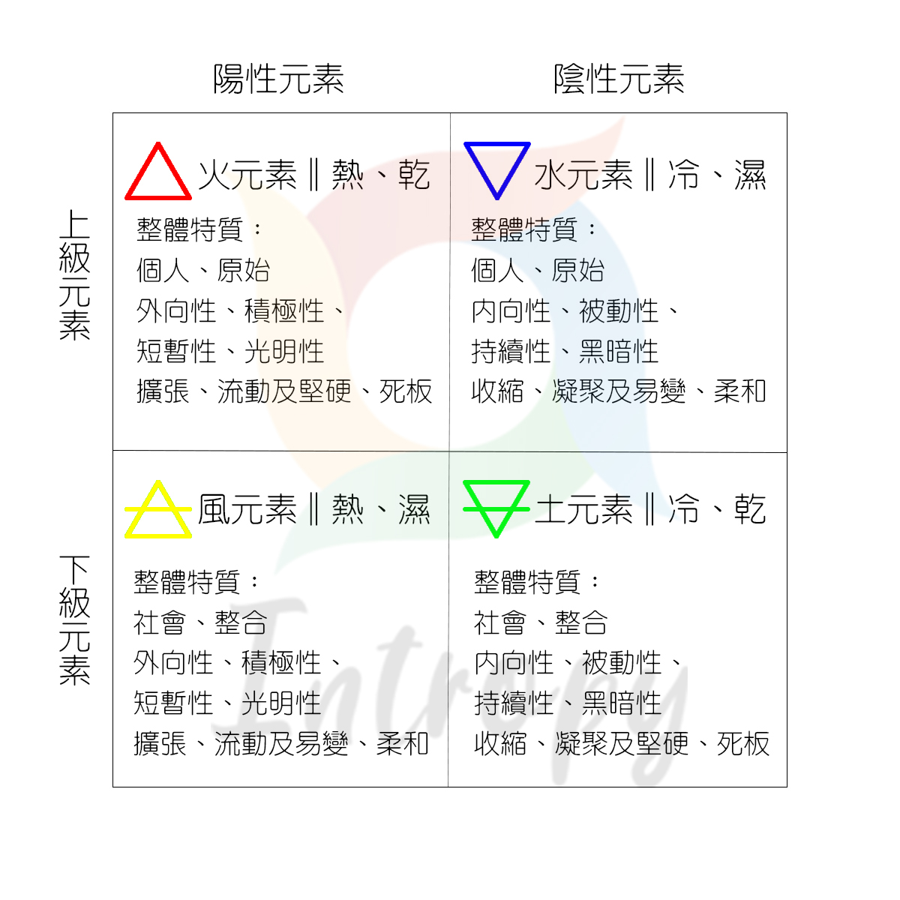

搞懂西方神祕學基礎四元素論，在後續學習塔羅或占星上，會更好運用四元素的角度去分析推論唷。
四元素是哪四元素？
四元素為：火元素、水元素、風元素、土元素。
四元素又區分為上級、下級元素及陰性、陽性元素。
上、下級元素所對應元素及其特質
上級元素為：火元素、水元素。
上級元素特質：個人、原始
下級元素為：風元素、土元素
下級元素特質：社會、整合
陰、陽性元素所對應元素及其特質
陰性元素為：水元素、土元素。
陰性元素特質：內向性、被動性、持續性、黑暗性
陽性元素：火元素、風元素。
陽性元素特質：外向性、積極性、短暫性、光明性
另外四元素分別有冷熱屬性、乾溼屬性。
冷熱、乾濕屬性特質及其對應的元素
冷屬性特質：收縮、凝聚
熱屬性特質：擴張、流動
乾屬性特質：堅硬、死板
濕屬性特質：易變、柔和
火元素：熱屬性、乾屬性
特質有擴張、流動及堅硬、死板
水元素：冷屬性、濕屬性
特質有收縮、凝聚及易變、柔和
風元素：熱屬性、濕屬性
特質有擴張、流動及易變、柔和
土元素：冷屬性、乾屬性
特質有收縮、凝聚及堅硬、死板
四元素屬性特質速查圖表
四元素關鍵字整合及四元素個別所對應的托特塔羅牌
火元素為：上級元素和陽性元素、熱和乾屬性
火元素整體特質：個人、原始、外向性、積極性、短暫性、光明性、擴張、流動、堅硬、死板
火元素的牌：IV皇帝、XI慾念、XIV藝術、XVI塔、XIX太陽、XX永世、小祕儀權杖牌組及權杖宮廷牌組
水元素：上級元素和陰性元素、冷和濕屬性
水元素整體特質：個人、原始、內向性、被動性、持續性、黑暗性、收縮、凝聚、易變、柔和
水元素的牌：II女祭司、VII戰車、XII吊人、XIII死神、XVIII月亮、小祕儀聖杯牌組及聖杯宮廷牌組
風元素：下級元素和陽性元素、熱和濕屬性
風元素的整體特質：社會、整合、外向性、積極性、短暫性、光明性、擴張、流動、易變、柔和
風元素的牌：0愚者、I魔術師、VI戀人、VIII調節者、X命運、XVII星星、小祕儀寶劍牌組及寶劍宮廷牌組
土元素：下級元素和陰性元素、冷和乾屬性
土元素的整體特質：社會、整合、內向性、被動性、持續性、黑暗性、收縮、凝聚、堅硬、死板
土元素的牌：III皇后、V教皇、IX隱者、XV惡魔、XXI宇宙、小祕儀圓盤牌組及圓盤宮廷牌組
四元素在塔羅牌占卜的實際運用
當你理解了四元素特質與其所對應的塔羅牌後
該如何實際運用呢？
舉例來說：看到III皇后牌，就可以知道皇后牌是有土元素的特質存在。

(圖為托特塔羅牌皇后牌)
從皇后牌這張圖來看，有整合、內向、黑暗、凝聚、堅硬的特質存在。
在解牌過程當中就可以參考這樣的特質再搭配其牌的牌義去做推斷。